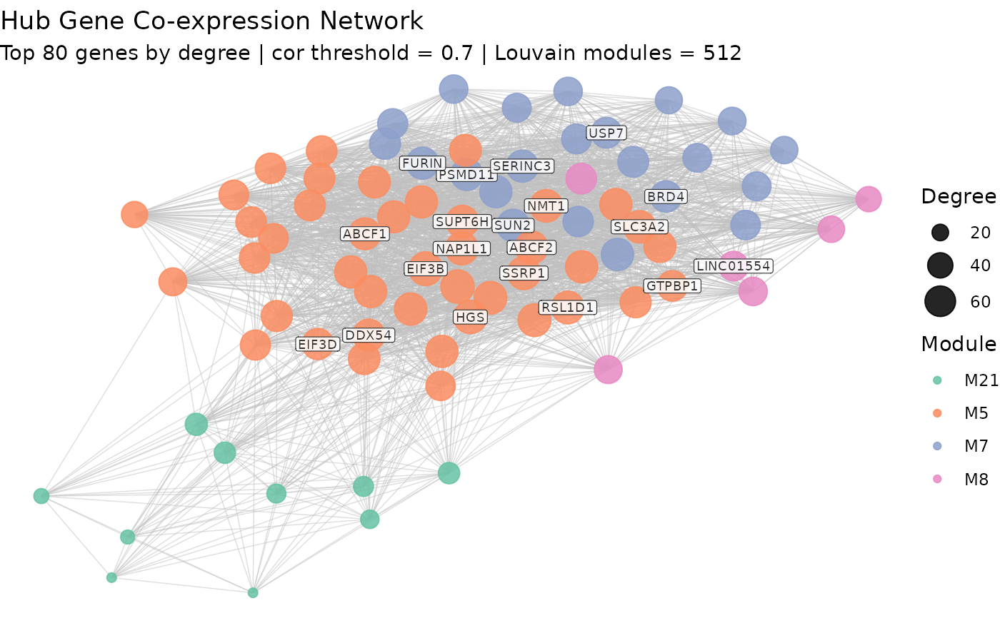

Plot force-directed network graph of genes
plot_network.RdPlots a force-directed network graph of the top n_top hub genes
colored by module membership. The top 20 hub genes are labeled by gene symbol.
Usage
plot_network(
network,
modules,
n_top = 80,
cor_threshold = 0.7,
community_method = "louvain"
)Arguments
- network
A network object output by build_network()
- modules
A named integer vector of module assignments
- n_top
The number of top hub genes to plot, ranked by degree (default: 80)
- cor_threshold
Correlation threshold used to define adjacency (default: 0.70)
- community_method
Community detection method used to detect modules (default: "louvain")
Value
Renders the network graph to the active graphics device. The ggplot object is returned invisibly for optional reuse.
Examples
data(example_se)
mat <- prepare_expression_matrix(example_se)
cor_mat <- pairwise_corr(mat)
adj_mat <- build_adjacency_mat(cor_mat)
net <- build_network(adj_mat)
gene_mods <- detect_network_modules(net)
#> Modularity: 0.545
#> Modules found: 512
plot_network(net, modules = gene_mods$modules, n_top = 80)
